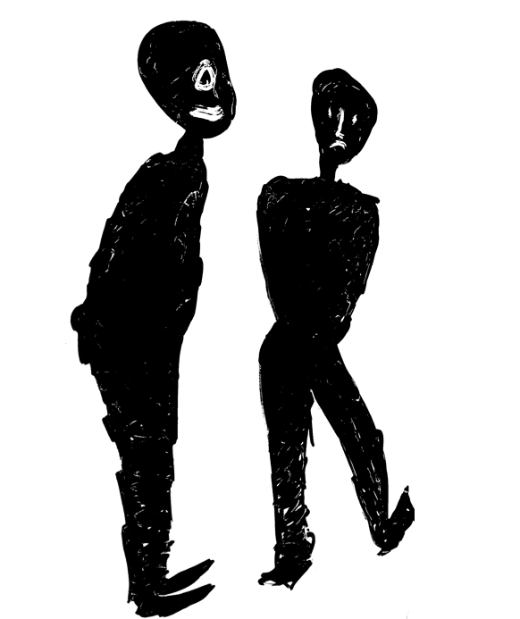

—
Scenes — press a number, or click

Keys
→ space
next beat / next scene
←
back
1 … 9
jump to scene
g esc
scene list
n
presenter notes
f
fullscreen
a
animation on / off (instant navigation)
h
hide the on-screen furniture
?
this list
notes